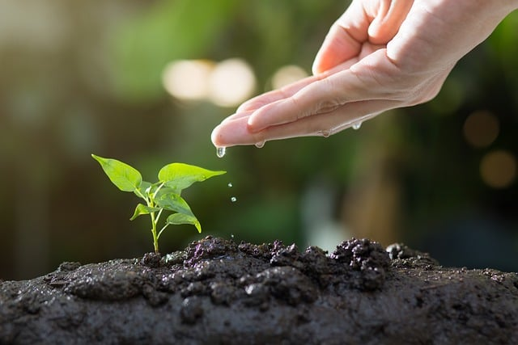
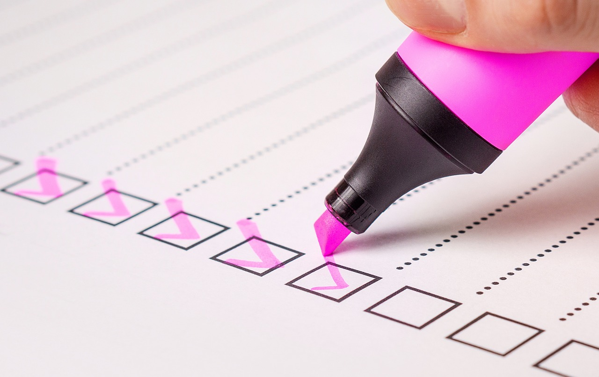

Top Mantras

Quantity creates quality

Right now, do more and think less. Later, think more and do less

Patience with your output, impatience with your input

Proof over promise
SOD means students of discipline. If you are someone that
prioritises a disciplined life over an hedonistic one then you're a
student of discipline. It's not yet an official community, maybe it
will be in the future.
- Fad-kun
Thank you for your time!
If you find the content interesting and you want to chat, you can
find me on Discord